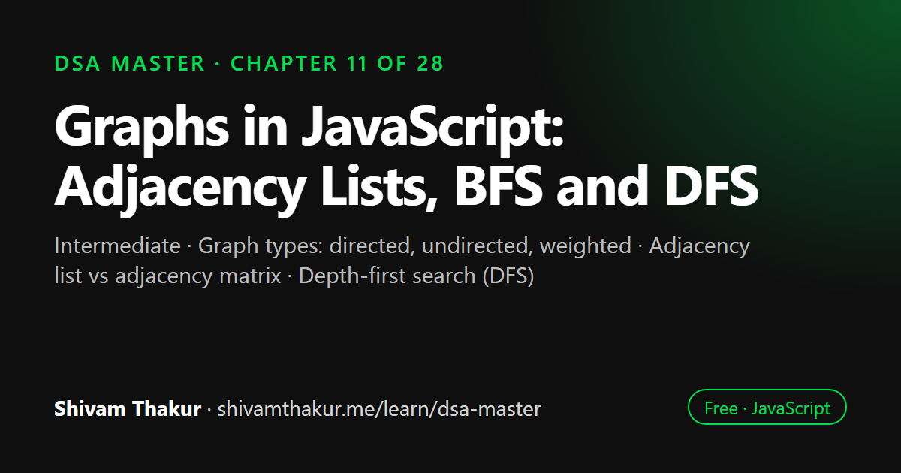

Chapter 11 of 28 · Intermediate
Graphs in JavaScript: Adjacency Lists, BFS and DFS
Graphs — The Most General Structure in This Book

A graph is a set of vertices connected by edges, and it can model networks, maps, dependencies and social connections. This chapter covers graph vocabulary and types, how to represent a graph with an adjacency list or matrix, depth-first and breadth-first search with visited tracking, connected components, grid problems and cycle detection in directed and undirected graphs.
In this chapter you will learn
- Graph types: directed, undirected, weighted
- Adjacency list vs adjacency matrix
- Depth-first search (DFS)
- Breadth-first search (BFS) and shortest unweighted paths
- Connected components and cycle detection
11.0 Why Graphs Come After Everything Else
Here's a genuine, useful realization to open this chapter with: every data structure in this book so far is secretly a special case of a graph. A linked list (Chapter 5) is a graph where every node has at most one outgoing connection. A tree (Chapter 8) is a graph with no cycles and exactly one path between any two nodes. Even an array can be viewed as a graph where each index connects to the next. Graphs are the most general way to represent "things and the relationships between them" — which is why this chapter comes last among the core structures: everything before it has been building the specific vocabulary and traversal instincts (BFS from Chapter 6's queue, DFS from Chapter 8's stack-based traversal) that graphs now generalize to their fullest extent.
Real-Life Analogy: Everything Is a Graph
Social networks (people = nodes, friendships = edges), road maps (intersections = nodes, roads = edges), the internet (web pages = nodes, hyperlinks = edges), dependency systems (packages = nodes, "depends on" relationships = edges), and even this book's own chapter structure (each chapter builds on others — a dependency graph!) are all graphs. Once you can think in graphs, you have a genuinely general-purpose lens for modeling relationships in almost any system.
11.1 Graph Vocabulary and Types
Definition: A graph is a collection of vertices (also called nodes) connected by edges, representing relationships between them.
11.1.1 Directed vs. Undirected
UNDIRECTED graph (edges have no direction — a symmetric relationship):
A --- B "A and B are connected" — you can travel A->B or B->A equally.
| | Example: Facebook friendships (mutual by definition).
C --- D
DIRECTED graph (edges have a direction — an asymmetric relationship):
A --> B "A points to B" does NOT imply B points to A.
^ | Example: Twitter/X follows (you can follow someone who doesn't follow back),
| v or a "depends on" relationship between software packages.
D <-- C11.1.2 Weighted vs. Unweighted
UNWEIGHTED graph: edges just represent "connected or not."
Example: "these two people are friends" — no notion of HOW connected.
WEIGHTED graph: edges carry a numeric cost/distance/capacity.
A --5-- B Example: road network, where the weight is the
| | distance or travel time between intersections —
3 2 crucial for the shortest-path algorithms in the
| | very next chapter (Chapter 12).
C --1-- D11.1.3 Cyclic vs. Acyclic
Definition: A cycle is a path that starts and ends at the same vertex without repeating any edge. A graph with no cycles is called acyclic. A Directed Acyclic Graph (DAG) — directed, with no cycles — is an extremely important special case, powering topological sort (Chapter 13) and representing any system of "dependencies" or "prerequisites" (build systems, course prerequisites, task scheduling) where circular dependencies would be a logical error.
11.2 Representing Graphs in Code: Adjacency List vs. Adjacency Matrix
This is a foundational decision that affects every algorithm in this and the next several chapters — get it right, and worked correctly, the same intuition transfers cleanly across DFS, BFS, shortest-path, and MST algorithms.
11.2.1 Adjacency List (The Overwhelmingly Common Default)
Definition: An adjacency list represents a graph as a Map (or array) where each vertex maps to a list of its directly connected neighbors.
// Using a Map (Chapter 4!) of vertex -> array of neighbors
class Graph {
#adjacencyList = new Map();
addVertex(vertex) {
if (!this.#adjacencyList.has(vertex)) {
this.#adjacencyList.set(vertex, []);
}
}
addEdge(vertex1, vertex2, directed = false) {
this.addVertex(vertex1);
this.addVertex(vertex2);
this.#adjacencyList.get(vertex1).push(vertex2);
if (!directed) {
this.#adjacencyList.get(vertex2).push(vertex1); // undirected: add BOTH directions
}
}
getNeighbors(vertex) {
return this.#adjacencyList.get(vertex) || [];
}
getAllVertices() {
return [...this.#adjacencyList.keys()];
}
}
const graph = new Graph();
graph.addEdge('A', 'B');
graph.addEdge('A', 'C');
graph.addEdge('B', 'D');
console.log(graph.getNeighbors('A')); // ['B', 'C']ASCII Visualization
Graph: A --- B
| |
C D
Adjacency List representation:
A -> [B, C]
B -> [A, D]
C -> [A]
D -> [B]11.2.2 Adjacency Matrix
Definition: An adjacency matrix represents a graph as a 2D array (or array of arrays) where matrix[i][j] indicates whether an edge exists between vertex i and vertex j (and, for weighted graphs, what that edge's weight is).
class GraphMatrix {
#matrix;
#vertexIndex = new Map(); // maps vertex name -> row/column index
constructor(vertices) {
vertices.forEach((v, i) => this.#vertexIndex.set(v, i));
const n = vertices.length;
this.#matrix = Array.from({ length: n }, () => new Array(n).fill(0));
}
addEdge(v1, v2, weight = 1, directed = false) {
const i = this.#vertexIndex.get(v1);
const j = this.#vertexIndex.get(v2);
this.#matrix[i][j] = weight;
if (!directed) {
this.#matrix[j][i] = weight;
}
}
hasEdge(v1, v2) {
const i = this.#vertexIndex.get(v1);
const j = this.#vertexIndex.get(v2);
return this.#matrix[i][j] !== 0;
}
}ASCII Visualization: Same Graph as a Matrix
Graph: A --- B
| |
C D
Adjacency Matrix (0=no edge, 1=edge; order: A,B,C,D):
A B C D
A [ 0, 1, 1, 0 ]
B [ 1, 0, 0, 1 ]
C [ 1, 0, 0, 0 ]
D [ 0, 1, 0, 0 ]
hasEdge('A','B'): matrix[0][1] = 1 -> true (O(1) direct lookup!)11.3 Depth-First Search (DFS): Formalizing Chapter 8's Instincts
Definition: Depth-First Search explores as far as possible along one path before backtracking, using either explicit recursion (Chapter 2's call stack) or an explicit stack (Chapter 6) to manage "where to backtrack to."
11.3.1 Recursive DFS
function dfsRecursive(graph, startVertex, visited = new Set()) {
visited.add(startVertex);
console.log(startVertex); // "visit" the vertex — replace with real logic as needed
for (const neighbor of graph.getNeighbors(startVertex)) {
if (!visited.has(neighbor)) {
dfsRecursive(graph, neighbor, visited);
}
}
return visited;
}Dry Run
Graph: A -> [B, C], B -> [A, D], C -> [A], D -> [B]
dfsRecursive(graph, 'A'):
visited={A}, print A
neighbor 'B': not visited -> recurse
visited={A,B}, print B
neighbor 'A': ALREADY VISITED -> skip (this is exactly what prevents infinite looping!)
neighbor 'D': not visited -> recurse
visited={A,B,D}, print D
neighbor 'B': already visited -> skip
neighbor 'C': not visited -> recurse
visited={A,B,C,D}, print C
neighbor 'A': already visited -> skip
Output order: A, B, D, C11.3.2 Iterative DFS (Directly Reusing Chapter 6's Stack + Chapter 8's Iterative Traversal Technique)
function dfsIterative(graph, startVertex) {
const visited = new Set();
const stack = [startVertex];
const result = [];
while (stack.length > 0) {
const vertex = stack.pop();
if (visited.has(vertex)) continue; // may have been added multiple times before being processed
visited.add(vertex);
result.push(vertex);
for (const neighbor of graph.getNeighbors(vertex)) {
if (!visited.has(neighbor)) {
stack.push(neighbor);
}
}
}
return result;
}11.4 Breadth-First Search (BFS): Formalizing Chapter 6's Queue-Powered Instincts
Definition: Breadth-First Search explores all neighbors at the current distance from the start before moving to vertices farther away, using a queue (Chapter 6) to enforce this strict "layer by layer" ordering.
function bfs(graph, startVertex) {
const visited = new Set([startVertex]); // mark as visited IMMEDIATELY upon enqueueing!
const queue = [startVertex];
const result = [];
while (queue.length > 0) {
const vertex = queue.shift(); // NOTE: O(n) with a plain array — Chapter 6's classic trap!
// Production code should use Chapter 6's proper Queue class.
result.push(vertex);
for (const neighbor of graph.getNeighbors(vertex)) {
if (!visited.has(neighbor)) {
visited.add(neighbor); // mark visited HERE, not when dequeued!
queue.push(neighbor);
}
}
}
return result;
}Dry Run
Graph: A -> [B, C], B -> [A, D], C -> [A], D -> [B]
bfs(graph, 'A'):
visited={A}, queue=[A]
dequeue A. result=[A]
neighbor B: not visited -> visited={A,B}, queue=[B]
neighbor C: not visited -> visited={A,B,C}, queue=[B,C]
dequeue B. result=[A,B]
neighbor A: already visited -> skip
neighbor D: not visited -> visited={A,B,C,D}, queue=[C,D]
dequeue C. result=[A,B,C]
neighbor A: already visited -> skip
dequeue D. result=[A,B,C,D]
neighbor B: already visited -> skip
Final order: A, B, C, D -- notice this is "layer by layer": A (distance 0),
then B and C (distance 1), then D (distance 2) — EXACTLY the FIFO discipline
from Chapter 6 enforcing this ordering.11.4.1 Shortest Path in an Unweighted Graph, Fully Implemented
function shortestPathUnweighted(graph, start, end) {
const visited = new Set([start]);
const queue = [[start]]; // queue of PATHS, not just vertices, to reconstruct the route
while (queue.length > 0) {
const path = queue.shift();
const currentVertex = path[path.length - 1];
if (currentVertex === end) {
return path; // first time we reach `end` via BFS IS the shortest path, guaranteed!
}
for (const neighbor of graph.getNeighbors(currentVertex)) {
if (!visited.has(neighbor)) {
visited.add(neighbor);
queue.push([...path, neighbor]);
}
}
}
return null; // no path exists
}11.5 Connected Components
Definition: A connected component is a maximal set of vertices in an undirected graph where every vertex is reachable from every other vertex within that set.
function countConnectedComponents(graph) {
const visited = new Set();
let componentCount = 0;
for (const vertex of graph.getAllVertices()) {
if (!visited.has(vertex)) {
componentCount++;
dfsRecursive(graph, vertex, visited); // reuse our DFS from section 11.3.1!
}
}
return componentCount;
}11.5.1 Number of Islands: The Grid-as-Implicit-Graph Pattern
function numIslands(grid) {
if (grid.length === 0) return 0;
const rows = grid.length;
const cols = grid[0].length;
const visited = new Set();
function key(r, c) {
return `${r},${c}`; // encode 2D coordinates as a single string key for the Set
}
function dfs(r, c) {
if (r < 0 || r >= rows || c < 0 || c >= cols) return; // out of bounds
if (grid[r][c] === '0' || visited.has(key(r, c))) return; // water or already visited
visited.add(key(r, c));
// Explore all 4 directions — these ARE the "graph edges" in this implicit graph!
dfs(r + 1, c);
dfs(r - 1, c);
dfs(r, c + 1);
dfs(r, c - 1);
}
let islands = 0;
for (let r = 0; r < rows; r++) {
for (let c = 0; c < cols; c++) {
if (grid[r][c] === '1' && !visited.has(key(r, c))) {
islands++;
dfs(r, c);
}
}
}
return islands;
}
const grid = [
['1', '1', '0', '0'],
['1', '1', '0', '0'],
['0', '0', '1', '0'],
['0', '0', '0', '1'],
];
console.log(numIslands(grid)); // 311.6 Detecting Cycles
Cycle detection differs meaningfully between undirected and directed graphs — a subtlety worth being precise about.
11.6.1 Cycle Detection in an Undirected Graph
function hasCycleUndirected(graph) {
const visited = new Set();
function dfs(vertex, parent) {
visited.add(vertex);
for (const neighbor of graph.getNeighbors(vertex)) {
if (!visited.has(neighbor)) {
if (dfs(neighbor, vertex)) return true;
} else if (neighbor !== parent) {
// Found an already-visited neighbor that ISN'T our immediate parent —
// that means there's another path back to it, i.e., a CYCLE.
return true;
}
}
return false;
}
for (const vertex of graph.getAllVertices()) {
if (!visited.has(vertex)) {
if (dfs(vertex, null)) return true;
}
}
return false;
}11.6.2 Cycle Detection in a Directed Graph (A Genuinely Different Problem)
function hasCycleDirected(graph) {
const visited = new Set();
const recursionStack = new Set(); // tracks vertices in the CURRENT DFS path
function dfs(vertex) {
visited.add(vertex);
recursionStack.add(vertex);
for (const neighbor of graph.getNeighbors(vertex)) {
if (!visited.has(neighbor)) {
if (dfs(neighbor)) return true;
} else if (recursionStack.has(neighbor)) {
// Found a neighbor that's part of the CURRENT path (not just visited
// at some point in the past) — this IS a genuine directed cycle.
return true;
}
}
recursionStack.delete(vertex); // backtrack: no longer part of the current path
return false;
}
for (const vertex of graph.getAllVertices()) {
if (!visited.has(vertex)) {
if (dfs(vertex)) return true;
}
}
return false;
}11.7 Edge Cases and Gotchas Checklist for Graph Problems
- Disconnected graphs. Does your traversal correctly handle graphs where not all vertices are reachable from a single starting point? (This is exactly why connected-components-style code loops over all vertices, launching fresh traversals as needed — section 11.5.)
- Self-loops (an edge from a vertex to itself). Does your cycle detection or traversal logic handle this degenerate case without crashing or infinite-looping?
- Directed vs. undirected confusion — always double-check which the problem intends, since cycle detection, connectivity, and even basic neighbor-counting differ.
- Empty graph or single-vertex graph. Verify BFS/DFS/component-counting handle these trivial cases correctly (0 or 1 component respectively).
- Weighted edges accidentally ignored — if a graph is weighted, make sure a plain BFS/DFS (which only cares about connectivity/edge count) is actually the right tool; weighted shortest-path needs Chapter 12's algorithms instead.
- BFS
visitedmarked at dequeue instead of enqueue time — re-read section 11.4's warning; this causes duplicate processing. - Grid problems: out-of-bounds checks — always check row/column bounds before checking the grid value at that position, to avoid an out-of-bounds array access error.
11.8 Chapter Summary
This chapter formalized graphs as the most general structure in the entire book — one that every previous linear and hierarchical structure (linked lists, trees) can be viewed as a restricted special case of. We built the core vocabulary (directed/undirected, weighted/unweighted, cyclic/acyclic, DAGs) and made the single most consequential practical decision in all of graph programming: adjacency lists (O(V+E) space, O(degree) neighbor iteration) as the correct default for the sparse graphs that dominate real-world scenarios, versus adjacency matrices (O(V²) space, O(1) edge-existence checks) for dense graphs or when direct edge lookups dominate — a decision that shapes every algorithm in this and the following graph-focused chapters.
We formalized DFS and BFS not as new techniques but as direct generalizations of instincts already built in Chapters 6 and 8 — DFS powered by a stack (explicit or the call stack itself), BFS powered by a queue — while being rigorous about the one genuinely new correctness requirement graphs introduce that trees never needed: explicit visited tracking to prevent infinite loops on cycles, plus the subtle but important distinction that BFS must mark vertices visited at enqueue time while iterative DFS must additionally re-check at dequeue/pop time, to avoid duplicate processing from a vertex being added to the frontier multiple times before being processed.
We established this chapter's single most tested fact: BFS, and only BFS, guarantees the shortest path in an unweighted graph, due to its strict layer-by-layer exploration order — a fact that directly motivates Chapter 12's need for specialized algorithms once edges carry weights. We covered connected components as "count how many separate DFS/BFS launches are needed to cover every vertex," and used this to introduce one of the most valuable pattern-recognition skills in the book: recognizing that a 2D grid with adjacency-based movement is an implicit graph, letting every "number of islands"-style problem become a direct, mechanical BFS/DFS application. Finally, we covered cycle detection, carefully distinguishing the genuinely different techniques required for undirected graphs (exclude only the immediate parent) versus directed graphs (track a recursionStack of currently-active-path ancestors, distinct from the broader visited set) — a distinction that trips up even experienced engineers who assume "seen before" always means the same thing regardless of edge direction.
11.9 Revision Notes
- Graphs are the most general structure in this book; linked lists and trees are graphs with structural restrictions (linear, or acyclic-with-unique-paths, respectively).
- Adjacency list (O(V+E) space, O(degree) neighbor iteration) is the correct default for sparse real-world graphs; adjacency matrix (O(V²) space, O(1) edge check) suits dense graphs or edge-existence-dominant workloads.
- DFS (stack/recursion) and BFS (queue) directly generalize Chapters 6 and 8 — graphs add the critical new requirement of explicit
visitedtracking to prevent infinite loops on cycles. - BFS must mark
visitedat enqueue time; iterative DFS must additionally re-checkvisitedat pop time — a subtle, important implementation difference between the two. - BFS uniquely guarantees shortest path in unweighted graphs, due to strict layer-by-layer exploration — DFS provides no such guarantee.
- Connected components = count of fresh DFS/BFS launches needed to cover all vertices; a 2D grid with adjacency movement is an implicit graph, unlocking "number of islands"-style problems as direct BFS/DFS applications.
- Cycle detection differs fundamentally between undirected (exclude only the immediate parent) and directed (track a
recursionStackof active-path ancestors, distinct from overallvisited) graphs.
11.10 Mind Map (ASCII)
GRAPHS
|
+------------------+-----------+-----------+----------------------+
| | | |
VOCABULARY REPRESENTATION TRAVERSAL SPECIAL PROBLEMS
directed/ (the KEY decision) | |
undirected, | +----+----+ +-----+-----+
weighted, Adjacency List DFS BFS Connected Cycle
DAG, cycle O(V+E) space, (Ch.6 stack/ (Ch.6 Components Detection
O(degree) iter Ch.2 call Queue) | |
= SPARSE default stack) | "count DFS/ Undirected:
vs. | guarantees BFS island exclude
Adjacency Matrix needs explicit SHORTEST launches" PARENT only
O(V^2) space, visited Set! path in | Directed:
O(1) edge check (NEW vs trees UNWEIGHTED Grid = implicit needs
= DENSE graphs -- cycles!) graph! graph (rows/ recursionStack
| | cols = vertices, (active path,
iterative DFS: visited marked adjacency = NOT just
check visited at ENQUEUE, movement) visited-ever)
AGAIN at pop not dequeue!
(multi-push bug) |
parent-map path
reconstruction11.11 Cheat Sheet
GRAPH REPRESENTATION DECISION
================================
Sparse graph (most real-world cases) -> Adjacency List: O(V+E) space, O(degree) neighbor iter
Dense graph / need O(1) edge checks -> Adjacency Matrix: O(V^2) space, O(1) edge lookup
DEFAULT TO ADJACENCY LIST unless given a specific reason not to.
DFS vs BFS
=============
DFS: stack (explicit or recursive call stack) -- deep first, then backtrack
Use for: cycle detection, connected components, exploring all paths, topological sort (Ch.13)
BFS: queue -- layer by layer, by distance from start
Use for: SHORTEST PATH IN UNWEIGHTED GRAPH (the #1 most-tested graph fact), level-order problems
CRITICAL GRAPH-SPECIFIC RULE (doesn't apply to trees!)
==========================================================
ALWAYS track a `visited` Set. Graphs can have cycles; trees can't loop back to an ancestor.
BFS: mark visited at ENQUEUE time (prevents duplicate enqueues)
Iterative DFS: mark visited at POP time too (a vertex can be pushed multiple times before popping)
CYCLE DETECTION
==================
Undirected: DFS, skip only the IMMEDIATE PARENT; any other already-visited neighbor = cycle
Directed: DFS with a SEPARATE recursionStack (current path's ancestors);
hitting a recursionStack member = cycle. Hitting a merely-visited
(but not on current path) vertex is NORMAL, not a cycle (diamond shapes).
IMPLICIT GRAPHS
==================
A 2D grid with adjacency-based movement (up/down/left/right) IS a graph:
vertex = (row, col) pair, edge = valid adjacent move
"Number of islands," "flood fill," "rotting oranges" = standard BFS/DFS in disguise11.12 Key Takeaways
- Graphs generalize every structure before them; adjacency list vs. matrix is the single most consequential representation decision, defaulting to lists for the sparse graphs common in the real world.
- DFS and BFS are Chapters 6/8's instincts generalized, with one critical new requirement: explicit
visitedtracking to survive cycles. - BFS uniquely guarantees shortest path in unweighted graphs — DFS does not, setting up Chapter 12's weighted shortest-path algorithms.
- Connected components and grid-based "island" problems are the same technique: count fresh traversal launches across unvisited vertices/cells.
- Cycle detection is genuinely different for undirected (skip only the immediate parent) versus directed (track an active-path
recursionStack) graphs.
11.13 20 Multiple Choice Questions
Tap an answer to check it. Your score updates as you go.
Score: 0 / 0 answered (20 questions)
Why are linked lists and trees considered special cases of graphs?
What is the space complexity of an adjacency list representation?
What is the space complexity of an adjacency matrix representation?
What is the default, generally preferred graph representation for real-world (typically sparse) graphs?
What critical requirement do graphs introduce for traversal that trees (Chapter 8) never needed?
What underlying structure powers DFS?
What underlying structure powers BFS?
What is the single most important guarantee that BFS provides which DFS does not?
In BFS, when should a vertex be marked as
visited?In iterative DFS, why must
visitedbe checked again upon popping, not just before pushing?What defines a "connected component" in an undirected graph?
How do you count the number of connected components in a graph?
In the "number of islands" problem, what plays the role of graph vertices and edges?
Why must undirected cycle detection specifically exclude the immediate parent vertex?
What additional structure does directed cycle detection need beyond a simple
visitedset?Why can a directed graph have a vertex visited via two different non-cyclic paths (a "diamond" shape)?
What is the time complexity of checking if an edge exists using an adjacency matrix?
What is the time complexity of iterating all neighbors of a vertex using an adjacency list?
Why is a
Map(Chapter 4) a natural fit for implementing an adjacency list?What technique reconstructs the shortest path after running BFS, without storing full paths in the queue?
Show the answer key
1-b, 2-b, 3-b, 4-b, 5-a, 6-b, 7-b, 8-b, 9-b, 10-b, 11-b, 12-b, 13-b, 14-b, 15-b, 16-b, 17-c, 18-b, 19-b, 20-b
11.14 20 Coding Problems
Easy
- Implement a
Graphclass withaddEdgeandgetNeighbors, from memory (section 11.2.1). - Implement recursive DFS from memory (section 11.3.1).
- Implement BFS from memory (section 11.4), being careful about when
visitedis marked. - Write a function to count the total number of vertices and edges in a graph.
- Write a function to check if two given vertices are directly connected by an edge.
Medium
- Implement
countConnectedComponentsfrom memory (section 11.5). - Implement
numIslands(the grid-as-implicit-graph pattern) from memory (section 11.5.1). - Implement
shortestPathEfficientusing the parent-map reconstruction technique from memory (section 11.4.1). - Implement both
hasCycleUndirectedandhasCycleDirectedfrom memory (section 11.6), and write a comment explaining precisely why their logic differs. - Given a graph, write a function to determine if it is bipartite (can be colored with 2 colors such that no two adjacent vertices share a color), using BFS.
Hard
- Given a grid representing a maze (open and blocked cells), find the shortest path from a start cell to an end cell using BFS, returning the path length or -1 if unreachable.
- Implement "Rotting Oranges": given a grid where some cells are rotten oranges, some are fresh, and some are empty, determine the minimum time for all fresh oranges to rot (rot spreads to orthogonally adjacent fresh oranges each minute), using multi-source BFS (starting BFS from ALL rotten oranges simultaneously).
- Given a directed graph representing a course prerequisite system, determine if it's possible to complete all courses (i.e., no circular dependencies) using the directed cycle detection technique from section 11.6.2.
- Given an undirected graph, determine the minimum number of edges to add to make the entire graph connected (hint: relates directly to the connected components count).
- Implement a function to clone a graph (deep copy every vertex and edge) given a reference to a single starting vertex, using BFS or DFS combined with a
Mapfrom original vertices to their clones.
Interview Level
- (Google-level) Given a graph representing web pages and hyperlinks, implement a basic web crawler simulation using BFS to explore pages up to a maximum depth, avoiding revisiting already-crawled pages.
- (Amazon-level) Given a graph representing a delivery network (warehouses and roads, unweighted for this problem), find the minimum number of hops needed to deliver a package from a source warehouse to a destination, using BFS.
- (Microsoft-level) Given a 2D grid representing an office floor plan, implement "flood fill" to simulate paint spreading from a clicked cell to all connected cells of the same color, using DFS or BFS.
- (Meta-level) Given a social network graph, implement a "degrees of separation" feature that finds the shortest connection path between two users (a direct application of BFS shortest-path, with real product framing).
- (Netflix-level) Design a content recommendation graph where videos are connected if users who watched one frequently watched the other; implement a function finding all videos reachable within N "hops" of a given video, using BFS with a depth limit, and discuss in comments how this connects to real recommendation-system design.
11.15 5 Interview Questions
- "How would you represent a graph in code, and why would you choose that representation?" (Tests the adjacency-list-vs-matrix trade-off reasoning, the chapter's central decision.)
- "Walk me through BFS and DFS, and tell me which one guarantees the shortest path — and why." (Tests the single most tested fact in the chapter.)
- "Why does graph traversal need a
visitedset when tree traversal (Chapter 8) didn't strictly require one?" (Tests understanding of cycles as the new correctness concern graphs introduce.) - "How would you detect a cycle in a directed graph, and how is that different from an undirected graph?" (Tests the recursionStack-vs-parent-exclusion distinction.)
- "How would you solve 'number of islands' on a 2D grid?" (Tests the implicit-graph recognition skill and direct BFS/DFS application.)
11.16 3 Real Projects
- Complete Graph Library: Build a
Graphclass supporting both adjacency-list and adjacency-matrix backing (switchable), with DFS, BFS, connected-components, and both cycle-detection algorithms, plus a self-check script verifying correctness on hand-constructed cyclic/acyclic, directed/undirected test graphs. - Maze Solver: Build a Node.js CLI tool that takes a text-based maze (using characters for walls/open paths/start/end) and finds the shortest path using BFS, printing the path visually overlaid on the maze — a direct, satisfying application of section 11.4's shortest-path technique.
- Dependency Graph Validator: Build a small tool that reads a list of package/module dependencies (e.g., from a simplified
package.json-like format) and uses directed cycle detection (section 11.6.2) to detect and report circular dependencies — a genuinely practical, real-world-flavored application directly setting up Chapter 13's topological sort.
11.17 Further Reading
- MDN Web Docs: "Map" (revisited yet again) for the adjacency list's underlying storage guarantees.
- Steven Skiena, The Algorithm Design Manual, chapters on graph traversal, for extensive additional real-world graph modeling war stories.
- Search "graph theory Euler and Hamilton" for the historical origins of graph theory (Euler's Seven Bridges of Königsberg problem is the field's founding puzzle).
- LeetCode's "Graph," "Union Find," and "Breadth-First Search" problem tags, for extensive additional practice directly extending this chapter's patterns.
Graphs in JavaScript: frequently asked questions
What is the difference between BFS and DFS?
BFS explores a graph level by level using a queue and finds the shortest path in an unweighted graph. DFS goes as deep as possible along one path before backtracking, using recursion or a stack, and suits cycle detection, path finding and topological sort.
Should I use an adjacency list or an adjacency matrix?
Use an adjacency list for most graphs because real-world graphs are usually sparse; it needs O(V + E) memory. An adjacency matrix needs O(V²) memory but gives O(1) checks for whether an edge exists, which suits small or dense graphs.
Why do graph traversals need a visited set?
Unlike trees, graphs can contain cycles, so a traversal without visited tracking can loop forever or process the same vertex many times.
How do you detect a cycle in a directed graph?
Run DFS while tracking the vertices on the current recursion path. If DFS reaches a vertex already on that path, there is a cycle. Kahn's topological sort algorithm also detects cycles when it cannot process every vertex.